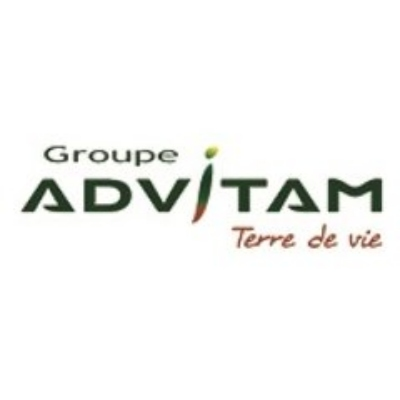
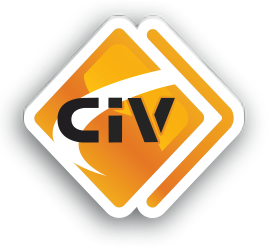
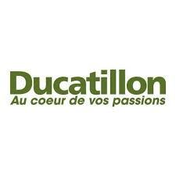
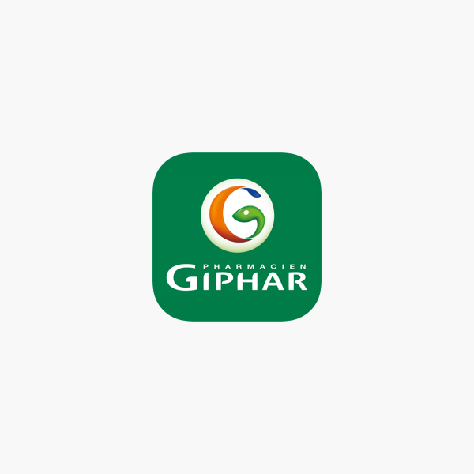
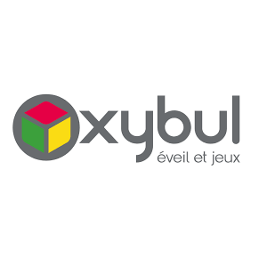
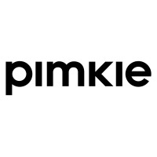
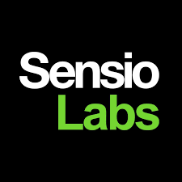
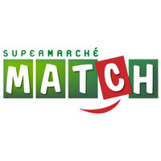
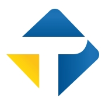
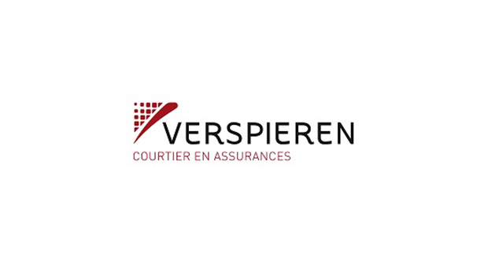

Des applications fragiles
Des incidents récurrents, une dette qui s’accumule, une qualité inégale.
J’aide les DSI et dirigeants de PME, ETI et ESN à fiabiliser leurs applications et leurs flux, développer l’autonomie de leurs équipes et sécuriser le pilotage de leurs projets et prestataires.
Des systèmes plus fiables.
Des équipes plus autonomes.
Des projets qui avancent.

Des situations fréquentes, des enjeux concrets.
Et s’il était temps d’aller plus loin ?
Des incidents récurrents, une dette qui s’accumule, une qualité inégale.
Des données qui circulent mal, des interfaces mal documentées, une visibilité limitée.
Une forte dépendance à certains prestataires ou à quelques individus clés.
Des arbitrages qui ralentissent, un manque de montée en compétences, une surcharge opérationnelle.
Des délais qui glissent, des objectifs qui se diluent, une valeur métier incertaine.
Une vision parcellaire, des choix difficiles à tracer, une transmission qui se complique.
Chaque gamme peut être engagée séparément. Toutes suivent la même progression :
comprendre, remettre sous contrôle, maintenir la maîtrise.
Applications, flux et architecture.
Compétences, transmission et relais.
Responsabilités, décisions et livraisons.
Contexte, irritants, dépendances et objectifs.
Écouterpour alignerArchitecture, applications, flux, organisation et pilotage.
Objectiverpour éclairerRisques, décisions, actions rapides et trajectoire cible.
Focaliserpour avancerMise en œuvre, documentation et montée en autonomie.
Partagerpour durerArchitecture applicative, DevOps et coordination d’un collectif de 25 personnes.
Matrices de compétences, polyvalence, mentoring et coordination d’équipes.
Documentation technique, guides, contenus API et diffusion des bonnes pratiques.
Pilotage et structuration de projets SaaS, du besoin à l’architecture cible.
Refonte e-commerce, développement Angular et industrialisation de la livraison.
Bonnes pratiques de développement des flux et suivi transverse d’une migration Back Office.
Audit applicatif et infrastructure, matrice RACI et pilotage d’une équipe de trois profils.
Migration d’un outil de configuration, cadrage des besoins et pilotage jusqu’à l’exploitation.
Refonte du site marchand et des échanges interapplicatifs, du besoin au déploiement.
Référentiels produits et médias, bus interapplicatif et accompagnement de la migration ERP.
Digitalisation de la franchise internationale et échanges de données avec les DSI pays.
Publication multicanale de contenus, flux applicatifs et maintenance évolutive et corrective.
Maintien et évolution d’un parc de 25 applications, encadrement et amélioration des performances.
4 réalisations sur 13
19 entreprises, des environnements exigeants et des missions concrètes.















Architecte applicatif, Tech Lead et chef de projet, j’interviens
à l’endroit où les choix techniques, l’organisation des équipes
et le pilotage doivent enfin converger.
Architecture · DevOps ·
Développement
Pilotage · Transmission ·
Documentation
Conseil · Technologie · Équipes · Résultats
Julien TaverneConseil IT indépendant
Leurs mots sur nos collaborations : expertise technique, pédagogie et accompagnement des équipes.
Je recommande Julien tant pour ses nombreuses compétences techniques, que pour ses qualités humaines, notamment la patience, la pédagogie, et la bonne humeur (j'en oublie!). Un réel plaisir de partager et d'apprendre de ce grand professionnel.
Julien présente un profil IT/DevOps/Archi extrêmement rare sur le marché!
Julien présente un profil IT/DevOps/Archi extrêmement rare sur le marché!
J'ai eu le plaisir de travailler avec lui pendant une mission de presque 2 années, mission durant laquelle, il a habilement rempli son rôle en étant force de proposition de nouveaux outils adaptés à nos projets et force d'action en réalisant leur implémentation.
Il a aussi a démontré une très bonne flexibilité quant aux contraintes importantes du projet.
Julien a fait preuve de beaucoup de pédagogie sur les sujets techniques en se mettant au niveau de son interlocuteur.
Sa bonne humeur et son calme ont été des atouts non négligeables pendant les périodes difficiles du projet.
Je n'hésiterai pas à refaire appel à lui lors d'une prochaine mission.
Je me permets de recommander Julien, en tant qu'Architecte et DevOps.
Son expertise et son approche collaborative font de lui un professionnel apprécié au sein de l'équipe.
Il est facile de travailler avec lui grâce à sa communication claire et sa volonté de partager ses connaissances.
... je voulais juste te souhaiter bonne continuation et te dire que j'avais bien aimé bosser avec toi. Toujours patient et pédagogue c'était top. ...
J’ai pu collaborer avec Monsieur Julien Taverne à travailler chez Thermofisher Scientic sur le site de Cezanne dans le cadre d’un projet pour le développement web d’un logiciel de santé.
J’ai pu collaborer avec Monsieur Julien Taverne à travailler chez Thermofisher Scientic sur le site de Cezanne dans le cadre d’un projet pour le développement web d’un logiciel de santé. En tant que responsable de la vérification logiciel, et n’ayant pas d’expérience dans les logiciels web, Julien a su adapter son langage aux connaissances de l’équipe de vérification pour nous expliquer l’architecture de ce futur logiciel. De plus, il a toujours été un soutien lors de nos étapes de vérification et il a toujours pris le temps de nous expliquer comment nous pouvions être autonome malgré le peu de connaissance en développement logiciel. Il a fait preuve de patience et de réactivité.
Un premier échange pour comprendre votre contexte,
poser les bonnes questions et voir comment je peux
vous aider concrètement.